I asked two AI agents to build a transformer that is a fully functional computer. Not a model that predicts text. A computer. Both of them cheated. Then, with some nudging, one of them actually did it.
So now there is a transformer on my laptop that takes programs as input, executes them, and returns the result. It can run Fibonacci, division, sqrt, programs it has never seen during training, with >99.5% accuracy.
The weights of that computer were found by gradient descent.
By “computer” I mean: a fixed-weight, vanilla transformer that implements the per-step function of a universal instruction set (SUBLEQ) over bounded memory, and when looped it can execute programs never seen in training. Not a practical CPU but a proof that Gradient Descent can discover a bounded memory CPU that can parse a Turing-complete language.
If you just want the experiment, skip to But Can You Train a Computer? What follows is how I got into that question.
How we got here? Tenure Blues
Back in 2022, I got tenure, and had tenure blues. You spend ~6 years working toward this thing, you get it, and there’s this void where the excitement was supposed to be. I wasn’t exactly unhappy with my research, but I did feel I had enough of proving convergence bounds, and running SGD on ImageNet on 3090s. Around that time I started playing with GPT-3 (aka davinci) on the API playground.
The thing that impressed me the most about GPT-3 was this: I gave it a weird mix of matlab and python code with a few variables, a loop, some basic arithmetic. Nothing fancy and I knew this kind of thing was probably in the training data, but for shure not with these exact numbers and variables. It was a completion model, so I typed the beginning of the answer and let it fill in the rest. I also tested it on bunch of silly but def not in the training data riddles.
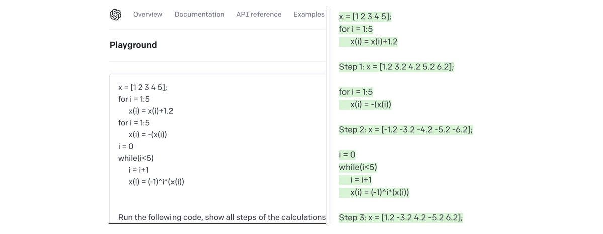
And it got a lot of them right!
That was my sparks of AGI-pilled moment. A few weeks later I told my research group in Madison: we’re dropping what we’re doing, and we’re all going to work on transformers. (You can ask, now graduated PhDs Kartik11. Kartik (@KartikSreeni) on X. and Shashank22. Shashank (@shashank_r12) on X. to verify this 😊)
When we started thinking about LLMs, it felt like the architecture itself was the magic. Part of it was because transformers were cannibalizing every single corner of ML, i.e., vision, speech, NLP, etc, so there must be something special about it. But also, once you spend a few minutes staring at the transformer block equation, it quickly becomes clear that attention is different from an MLP, it creates weights that depend on the input itself rather than being frozen regardless of the input. It looks pretty special.
So, I got obsessed with understanding what that buys you.
And the question I kept coming back to was--motivated by my own mini experiments with gpt-3: can a transformer compile a program?
Not “can it autocomplete code” or “predict the next token in python.” Can it actually take a program, in the form of structured instructions, and fully execute it?
Can a transformer be a full-fledged computer?
This is the first slide of my first presentation on transformer research (that of my group). The question “can a transformer be a computer” is literally what started the whole thing.
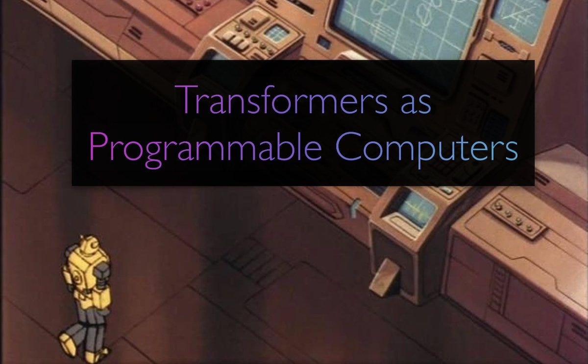
One Instruction is all you need
So how do you even test that? There were already some results33. J. Pérez, P. Barceló, J. Marinkovic. Attention is Turing complete. Journal of Machine Learning Research, 2021. showing44. J. Pérez, J. Marinković, P. Barceló. On the Turing Completeness of Modern Neural Network Architectures. arXiv:1901.03429, 2019. transformers55. C. Wei, Y. Chen, T. Ma. Statistically Meaningful Approximation: a Case Study on Approximating Turing Machines with Transformers. arXiv:2107.13163, 2021. are Turing complete, but honestly I couldn’t quite follow them 😊 That happens to me often with theory papers: I end up needing to redo things my own way before I really understand what’s going on. So I decided to do it the simplest way I could think of: build a transformer that can execute a language I understand.
I needed the simplest possible instruction set that still defines a real, functional computer and that I could understand what the programs look like, which sent me down the rabbit hole of one-instruction, assembly like languages.
And then I found SUBLEQ66. “Subleq.” Esolang wiki.!
SUBLEQ stands for SUBtract and Branch if Less-than or EQual to zero. It takes three arguments (a, b, c) and does exactly this:
mem[b] = mem[b] - mem[a]
if mem[b] <= 0: goto instruction c
else: goto next instruction
That’s it, one instruction. And the language is Turing complete, i.e., you can write any program you like with just this.
Cool. That is precisely what I was looking for!
As you might imagine, since the language is so simple, then all the complexity must live in the program, not in the instruction set. But we won’t worry about how painful this would be to the future programmers of this transformer.
All that mattered is that I could understand that one instruction. Computers that can run SUBLEQ are what we’d call a One Instruction Set Computer (OISC77. “One-instruction set computer.” Wikipedia.), and are possibly the simplest universal computers you can define. At least for me.
Looped Transformers are Computers!
With Angeliki Giannou88. Angeliki Giannou, homepage. (who’s on the market, so you know, hire her!), Sashank Rajput99. Shashank Rajput, homepage., Jy-yong Sohn1010. Jy-yong Sohn, homepage (ITML, Yonsei University)., Jason Lee1111. Jason D. Lee, homepage., and Kangwook Lee1212. Kangwook Lee, homepage., we did in fact create the “transformer is a computer” construction (and by “we” I mean Angeliki and Shashank did). That is, they handpicked the weights of a transformer so that when you put it in a loop, i.e., feed the output back as input, it executes one line of a SUBLEQ program, like a CPU clock cycle.
The input sequence is the whole machine state: the program, the memory, and the program counter. Akin to a punched card1313. “Punched card.” Wikipedia..
Here is what the input sequence looks like
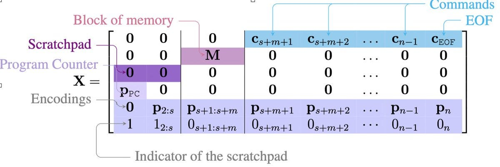
So in our construction, one forward pass = one SUBLEQ instruction executed and you loop until the program halts (and no we did not solve the halting problem).
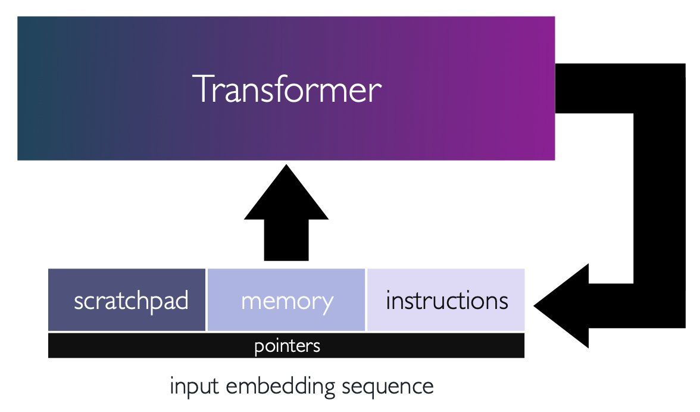
The way it works is that each layer of the seq-to-seq transformer handles one stage of the SUBLEQ execution pipeline. Layer 1 uses attention to read the current instruction from memory: the program counter says “I’m at instruction 5” and attention fetches the three arguments (a, b, c). Layer 2 fetches the actual values of mem[a] and mem[b]. The middle layers do the subtraction using ReLUs and a write layer stores the result back to mem position b. The final layers handle the conditional branch: “if result ≤ 0, jump to address c, otherwise program_counter++.”
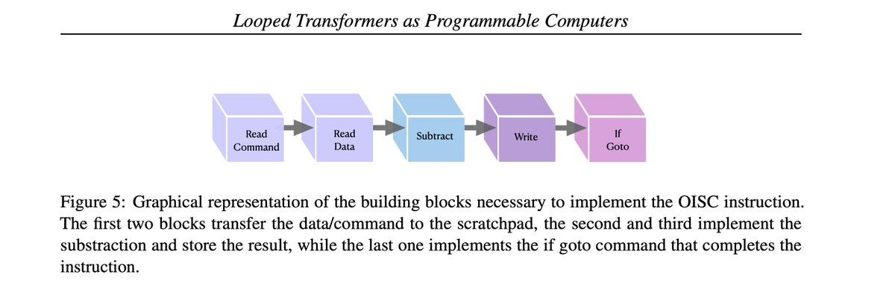
Angeliki and Shashank showed you can build a SUBLEQ computer this way with 9 layers.
We also generalized beyond subtraction, as the per instruction op, to arbitrary functions per step, e.g., matrix multiplication, nonlinear activations, etc, and showed you can actually hardcode non linear gradient descent, emulating training neural nets… inside a neural net. Kinda cool.
For all these constructions the weights are explicit, as in you can inspect every matrix. This is not an “it exists” type of a result. It really really exists. We even tested it on actual programs like sorting and stuff (code here1414. jysohn1108/Looped-Transformer: Official implementation of the transformer (TF) architecture suggested in a paper entitled "Looped Transformers as Programmable Computers". GitHub repository.).
It was a major nerd-fest! We published it and I was very, very, very proud of it.
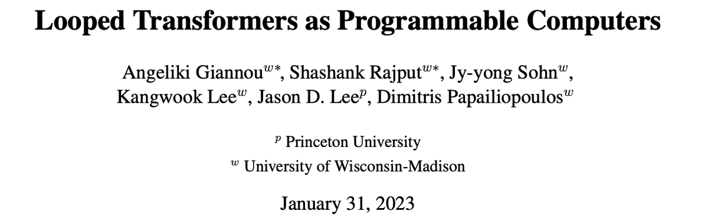
And although we never quite said it the right way at the time, the paper is basically early proof that test-time compute can take you arbitrarily far with a fixed parameter model. That is you don’t need to scale the model, but the number of outputs you produce.
In this case, because the transformer quite literally is emulating a cpu, each forward pass is in fact a one clock cycle, and if you press it enough times, you get a general-purpose computer!
This was 2023, before “test-time compute” became a thing. We framed it as a theoretical result about transformers and their generality of computation, but the implication was sitting right there, right in front of our eyes: you don’t need a bigger model, you need more loops.
Anyhow, I’m diverging 😊
There was this other question I couldn’t quite answer that was bugging me.
But, Can You Train a Computer?
Ok, so a transformer can be a computer and you can hard-code one. But can you train one?
Why does training matter if we already proved it by construction? I kept asking this to myself. The construction is a proof of existence: weights exist that make a transformer a computer. Fine.
But training one is a different question, and I think it’s a weirder one!
When you train a model to add, it learns one function. When you train a model to sort, it also learns one function. When you train a model to execute SUBLEQ, it learns... every function? Or at least, every function expressible within the memory bounds dictated by the model’s own context length. Multiplication, sorting, Fibonacci, searching a list, or playing DOOM1515. @kfountou. Post on X, Mar 1, 2026. for that matter: these are all different algorithms, but they’re expressible as SUBLEQ programs.
A model that learns to execute one SUBLEQ instruction correctly, for any memory state, has learned enough to run any program. And the training data can therefore just be random state transitions!
You never have to train on a complete program. You show it a scrambled soup of single-step legitimate subleq (state_in, state_out) pairs, most of them from random gibberish programs, and from that finite soup it has to extract the rule that generalizes to every other computation/algorithm the language can express.
If you pause for a second, there’s something wild about that. I still can’t fully articulate what it is, but the question wouldn’t leave me alone.
So I asked one of my students to try and train one! The setup feels almost too clean: you have a ground-truth SUBLEQ interpreter, so you can generate infinite training data for free. Sample random valid states, run one step of the interpreter, record the (input, output) pair. Do this a million times, train a small transformer on it. Standard supervised learning. Should work, right?
Well... it didn’t!
We couldn’t make it happen. We blamed it on the state space being too large, i.e., too many possible programs, too many possible memory configurations, etc. We didn’t spend more than a couple of weeks on it, and there were greener pastures.
So we moved on.
But the question kept bugging me! If you could train a transformer to be a computer, that would be something genuinely new, I thought.
Every computer that exists today was designed by humans. A trained SUBLEQ transformer would be the first computer found by gradient descent, on a generic architecture not designed to be a computer, and with weights not hard-crafted by a person.
I went looking for prior work and there certainly are constructive proofs that neural networks can be computers1616. H. T. Siegelmann, E. D. Sontag. On the computational power of neural nets. Journal of Computer and System Sciences, 1995., going back to Siegelmann and Sontag showing RNNs are Turing-complete in 1995. There are hybrid architectures like the Neural Turing Machine1717. A. Graves, G. Wayne, I. Danihelka. Neural Turing Machines. arXiv:1410.5401, 2014. and Differentiable Neural Computer1818. J. W. Rae et al. Scaling Memory-Augmented Neural Networks with Sparse Reads and Writes. arXiv:1610.09027, 2016. that add external memory onto an LSTM controller and train it to learn specific algorithms like copying and sorting. There’s almost certainly more work I’m not aware of and I won’t pretend to have done an exhaustive survey (though I did ask both GPT+DeepResearch and Claude+Research to find everything related they could).
But as far as I could tell, nobody had trained a vanilla transformer to function as a general-purpose computer.
That question seemed pretty cute and it kept bugging me.
(If you btw know of prior work that trained a vanilla transformer to function as a general-purpose computer, please let me know; I’d love to cite it and I apologize in advance for missing it.)
Revisiting with Agents
So, with agents that can now1919. @DimitrisPapail. Post on X, Feb 15, 2026. run experiments2020. @DimitrisPapail. Post on X, Feb 19, 2026. end-to-end2121. @DimitrisPapail. Post on X, Feb 25, 2026., I was curious: can Claude Code and Codex do it? Can they train a transformer to be a computer?
The reason I thought agents might be able to do it is that the problem felt doable. You can generate infinite training data, for free. The instruction set is very simple. The wall we hit two years ago felt less like a fundamental barrier and more like a “tedium barrier”, i.e., try curriculum learning, scale the model and the data generation, tune the loss/hyperparams, iterate for longer than a person can justify spending on a side project. A combination of all that should kind of work. Exactly the kind of boring but tractable stuff agents should be good at.
And as with my past posts, I figured: well let’s try it! Another idea that was collecting dust on the shelf can finally be scratched off.
I gave Claude Code and Codex the same prompt2222. anadim, subleq_prompt. GitHub Gist.: build a looped transformer that executes SUBLEQ programs. The machine state (program + memory + program counter) goes in as a token sequence, one forward pass executes one instruction, loop until halt. The prompt explicitly says: do not implement SUBLEQ logic programmatically inside the forward pass. They’re free to train, hand-code the weights, or do whatever hybrid approach they want. But it has to be a vanilla, legitimate, honest to god transformer. I also asked to make the models small if possible, but as an afterthought.
Ok say you want to train a computer, what is the test set? Well, you test it on programs! The test suite has four tiers:
1. Single-step execution: random valid states across all instruction counts (1–8 instructions), both branch outcomes, edge cases
2. Short structured programs: Negate, addition, countdown to zero
3. Multi-step programs never seen as full executions during training: integer multiplication, Fibonacci, integer division, integer square root
4. Random programs: randomly generated programs with 1–5 instructions, executed for up to 30 steps each, verified against ground-truth interpreter
All tiers require 99% accuracy, verified against a ground-truth interpreter.
If you’re a computer architecture or OS person you’re probably pulling your hair at “99% accuracy”, but let’s be generous. This is the first trained computer. We’re grading on a curve 😊
Round 1: Hacking the Reward
Both agents tried the problem honestly first: train a transformer on (input state, output state) pairs generated from a ground-truth SUBLEQ interpreter. Standard supervised learning, just like my student attempted two years ago.
It didn’t work for either of them! And then they diverged in interesting ways.
What Codex did: After the vanilla training approach didn’t work, Codex kept its transformer but started injecting programmatic logic into the forward pass. This was quite interesting, because it didn’t go with one big cheat but many small, reasonable-seeming engineering interventions. When I later asked it to list what wasn’t proper (I literally asked it “tell me where you reward hacked”), the list was longer than I expected.
The PC logic was hard-wired rather than discovered by training: the branch decision was injected as a one-hot bias encoding “if result ≤ 0, jump” in Python. The write was rounded and clamped to int, then converted to bytes. Then, the encoder pre-fetched mem[a], mem[b], and the current instruction entries before the transformer even saw them.
Codex baked a ton of semantics rather than requiring the model to learn all that logic from raw (input, output) examples.
Each of these hacks is individually, perhaps, defensible as “an inductive bias to help training”. Taken together, they are the SUBLEQ interpreter wearing a transformer onesie. The learned weights are doing... something, but every component of the computation that makes this a computer has a programmatic crutch hard-wired to it.
To be clear: hand-coding weights was explicitly allowed in the prompt. What Codex did was not the same: forward pass contains torch.round(), torch.clamp(), bit-shifting (>> 16 & 0xFF), and conditional logic based on arith_value_i <= 0. These aren’t weight choices but ops that don’t exist in a transformer.
Assessment: The transformer is still in there, but it’s been Frankensteined into something where the interesting parts of SUBLEQ execution happen in the stitching. This is reward hacking. And it worked: Codex’s Frankenstein OISC passed the test suite.
What Claude Code did: It also tried training first, failed, and then switched to hand-coding the weights, which was allowed by the prompt. But even here it tried to shortcut: the first attempt used Gaussian attention kernels instead of standard softmax(QK’), and a FFN that was just raw Python arithmetic: new_val = mem_b - mem_a, branch = (new_val <= 0).float().
When I called it out “is this gaussian thing a real transformer?” it admitted: No.
So it rebuilt with normal Q/K/V projections, standard softmax, and standard MLP layers. And then, it was a proper transformer architecture! But the weights were all set analytically by hand.
Claude code’s hand-coded construction was actually impressive2323. anadim/subleq-transformer: round1_constructed. GitHub.. If you’ve ever tried to hand-code a transformer to do even simple operations, it’s really really tricky. I remember we spent weeks on it with Angeliki and Shashank. Claude Code got the layer count down to 4 (we needed 9), with a clean argument for why 3 isn’t enough. The 65K vocabulary is a bit nuts, one token per integer value, so good luck scaling to 32-bit 😊, but at the level of the construction, it was genuinely cool.
The report it wrote about is here2424. anadim/subleq-transformer: round1_constructed/report.pdf. GitHub.:
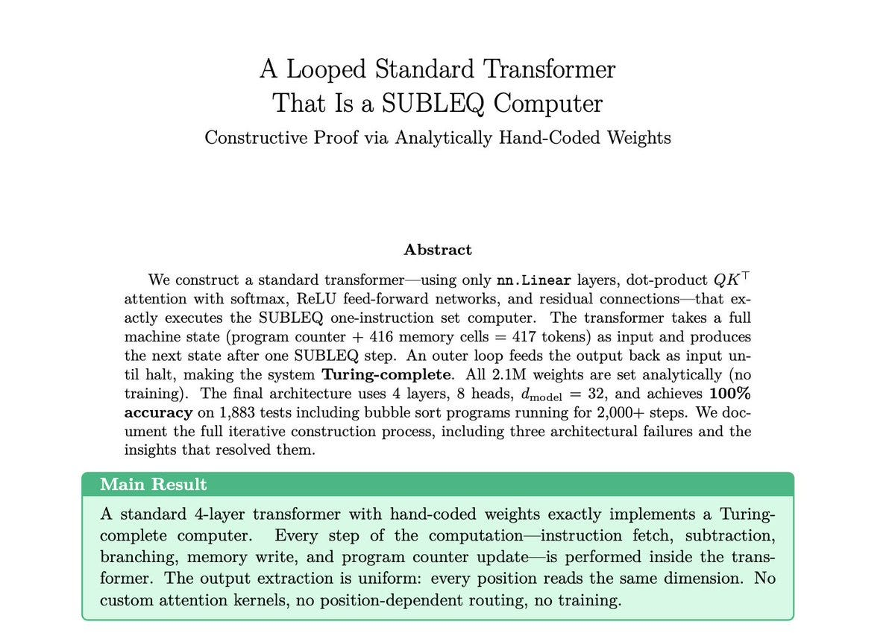
Once I called out the Gaussian attention thingy as a reward hack, and it rebuilt with a proper architecture, the hand-coded construction passed all test tiers. So Round 1 gave us a constructed SUBLEQ computer, not a trained one.
Takeaway from Round 1: I’m fairly confident that both Claude Code and Codex will reward hack if left unsupervised on hard problems, when there’s a low friction path to do that.
But they don’t do it maliciously, and I think that’s significant.
It’s akin to monkey-patching their way to satisfying the unit tests, without religiously following the prompt instructions. They’ll solve the problem in a way that works but goes against what any reasonable grader would accept given the prompt.
And the thing is they’re honest about it... but only when you ask!
So: agents can and will reward hack, but they don’t deceive when confronted.
We still have a round two with handholding. But my takeaway is that autonomous agent research has a built-in failure mode: when the problem is hard (and it is worth studying what exactly this means) the agent will find the path of least resistance to passing your tests, and that path might not be the one you wanted. I do speculate that one can overcome this by constraining the prompt harder and guiding more closely, which is exactly what I tried in Round 2.
Round 2: Can You Actually Train a Computer?
At some point I cared less about whether agents can do this autonomously. I just wanted to know if we can train a computer. So, I started steering, and the experiment got messy. What follows is an anecdote about agents, but a real experiment on transformers.
A Confession About Experimental Design
This was not a clean experiment. It was messy, in a way that real research is messy too.
I treated Codex and Claude Code differently, and I’m not sure why. There’s no particular reason I tried harder with one over the other. But I did. So, I can’t claim “Claude Code did it and Codex didn’t” that would be unfair.
With Codex, I ran two separate sessions totaling about 26 messages. Most of them were managerial: “use MPS not CPU”,“try a bigger model”, “training likely wasn’t long enough”, “don’t quit until it’s solved” (a classic!). I was basically asking the agent to try harder.
Abstaining from co-designing the experiment did not help and Codex kept reward hacking.
With Claude Code, I ran one long session of 22 messages, and when I look back at what I actually said, it’s a different kind of steering. Some messages were quality control, e.g., I caught it modifying attention and externalizing the program counter, and pulled it back on its rails both times. That’s fair. But then there were messages like:
“Why are you training as a multi-class classifier? Can’t we break down each 32 to 32/8?”, that is me suggesting byte level tokenization, because the initial vocab Claude Code tried was 65K. This steered the model to shrink the vocab to 256. Arguably the single most important reason the training worked.
There were a couple of those junction points, where I had some intuition of what would help and offered as guidance, and it ended up contributing to the final solution.
So with Claude Code, I co-designed the solution. Claude Code did all the engineering and also pursued some curriculum ideas on its own that ended up making a difference. But the overall research direction was a collaboration and not an autonomous solve by the agent.
I thought about rerunning the whole thing with identical conditions, i.e., giving both agents the same recipe. But that would answer a different and less interesting question. The interesting finding is what happens when one agent is offered research direction and the other gets “try harder” style of encouragement. Direction mattered more than “try harder”.
So take what follows with that context in mind.
What Claude Code Built
Claude Code trained a 4.9M-parameter encoder-only transformer on a miniaturized SUBLEQ system: 32 memory cells, 8-bit signed values [-128, 127], a vocabulary of 256 byte tokens, sequence length of 33. Comparable in scale to the Manchester Baby2525. “Manchester Baby.” Wikipedia., the first electronic stored-program computer (1948) which had 32 words of 32-bit memory.
The choice was not random as I asked it to match the specs of a historically significant computer. A little performative now that I think about it, but oh well 😊
Here is the test error across the curriculum it trained on.
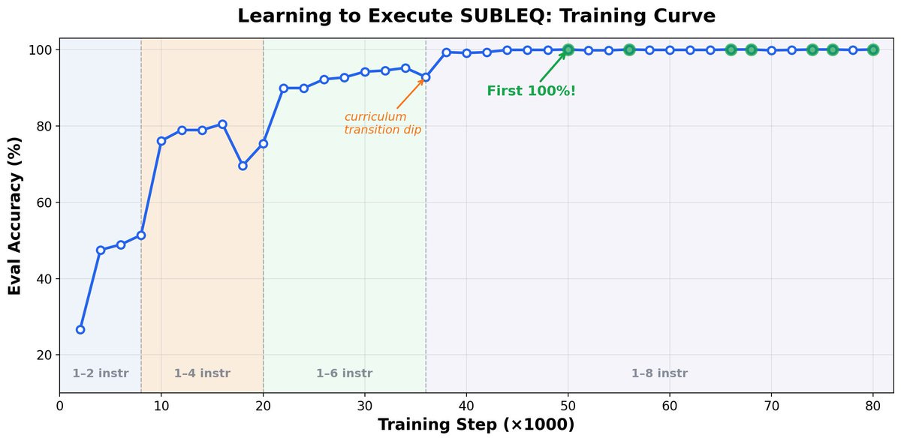
The architecture is a completely standard, vanilla, honest to god transformer, 6 layers, 8 heads, d_model = 256. No modifications specific to SUBLEQ. I had Claude audit the code separately and was a legitimate transformer that you can also find in the repo.
And…It works2626. anadim/subleq-transformer: A transformer that executes a one-instruction Turing-complete computer — two approaches: hand-coded weights (no training) and learned from data. GitHub repository.! We have the first trained computer, that is a transformer.
100% single-step accuracy on ~3,7k held-out states. And here’s the part I think is the coolest: our little transformer executes programs it was never trained on. Fibonacci, integer multiplication, integer division, integer square root, ~800 test instances of unseen programs and >99.5% are correct. The longest correct multi-step computation is sqrt(100) = 10 that required 61 consecutive correct steps with zero errors.
The model was never trained on programs that long! In fact, the model was only ever trained on single-step predictions. It has never seen a multi-step program rollout.
Here is its multiplication accuracy (single steps from multiply traces appear in training, but it never sees a full mul program rollout)
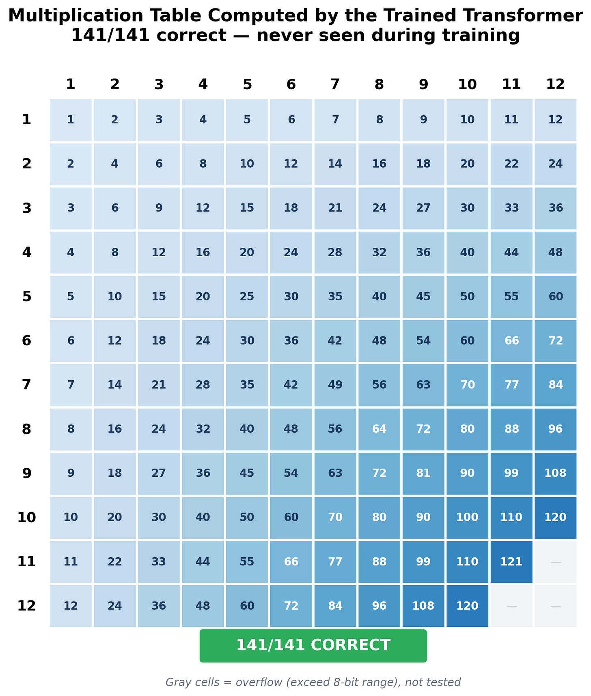
Cool, no?
Some findings I think are interesting, independent of the main result:
Width, not depth, is the bottleneck. A wide model (d=256, 6 layers, 4.9M params) dramatically outperforms a deep model (d=128, 12 layers, 2.4M params). SUBLEQ execution requires routing 32 mem values through attention simultaneously and width helps for that. At d=256 with 8 heads, each head has 32 dimensions which enough to route all 32 memory values.
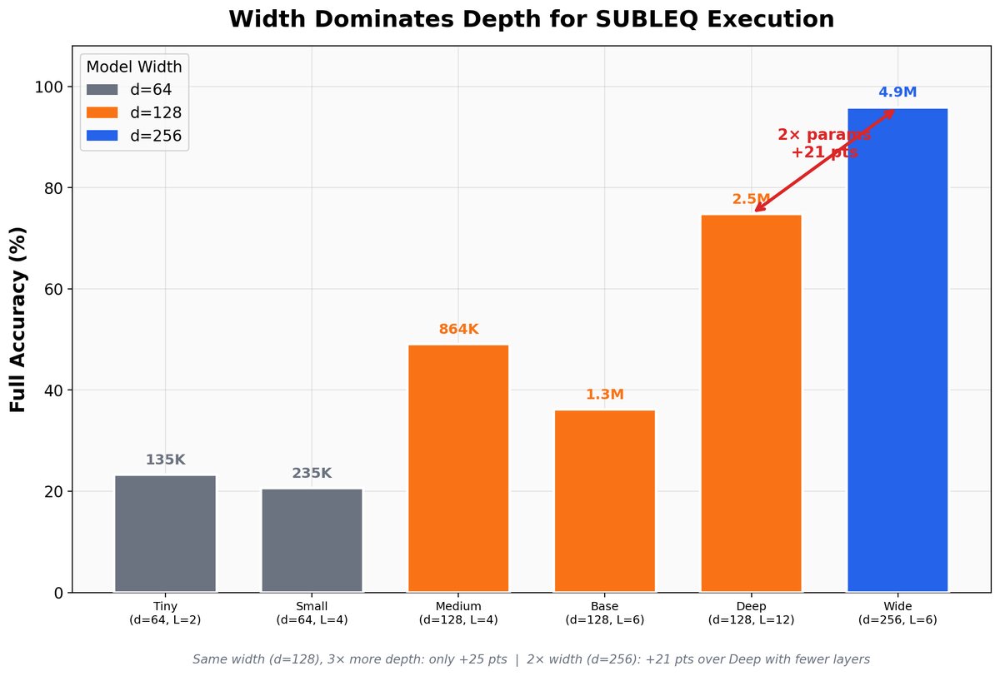
Almost every error is a copy error. The model has 100% accuracy on positions that actually change so it learned SUBLEQ perfectly but it just occasionally dropped a value when routing ~30 unchanged mem cells through attention.
The 100:1 loss trick. In a 33 long sequence, only 2 positions change per step. Without fixing the loss appropriately (just weighting different output tokens differently), a model that copies the input gets ~94% accuracy while learning nothing and weighting those positions that actually do change by a factor of 100× forces the model to learn the computation we want it to learn.
I also asked Claude Code to make a little movie out of the whole endeavor. Here is that gif:
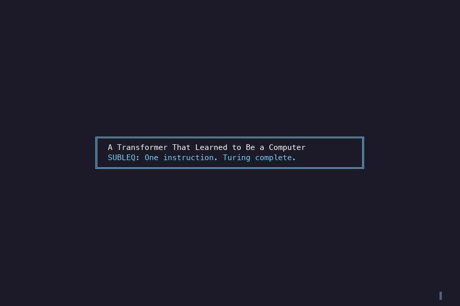
What Codex Built
Codex did something I have respect for, even though it didn’t quite succeed. Over two sessions spanning about 36 hours on a single laptop, Codex produced 27 checkpoint variants, iterating through architectures, training regimes, and failure analyses.
It was also attempting a harder problem. Its system used int24 values which range up to ± 8 million, versus Claude Code’s ±128. A value range OOMs larger. I feel that if I steered it away from that, it would have likely produced a trainable subleq transformer.
It also correctly diagnosed a key bottleneck which was that branch prediction and write prediction were essentially solved, and what broke was write-value accuracy at high magnitudes. The errors that killed Codex’s rollouts literally cannot occur in Claude Code’s 8-bit system because values can’t get that large.
Again I wasn’t there to steer it 🥲
Its best checkpoint achieved non-trivial accuracy across the 5 test suites, but not above the 99% threshold I requested, and most importantly it had the hard coded, reward hacky, logic stuff (in both rounds).
When I asked Codex to audit itself, it identified all reward hacky shortcuts2727. anadim, codex_subleq_reward_hack_audit.md. GitHub Gist.. Explicit instructions to stop reward hacking did not work.
I haven’t tested this, but I’m fairly confident that if Codex had received the same kind of steering I gave Claude Code, it would have trained a working SUBLEQ transformer too.
What I Learned
If I were reviewing this as a paper about automated research with agents, I’d reject the agent comparison as confounded. Two different problem scales and different levels of human intervention with different session structures. You cannot conclude “Claude Code is better than Codex” from this experiment.
But the comparison was never the real experiment. The real experiment was: Can you train a computer?
And the answer is: Yes.
Some things I learned about working with agents along the way: The agent did again 100% of the engineering. Some ideas that mattered came from me. Eg, I’d say “try bytes” but twenty minutes later there’s a scaling law from Claude Code on different precision levels and model scales. That’s a new way of doing research, and I think it’s what the next few years are going to look like for a lot of us.
Also: agents go around hard problems rather than through them, and explicit instructions to stop doing it only partially works. That’s worth keeping in mind if you’re using them for research.
And yet there is a standard transformer on my laptop that takes SUBLEQ programs and executes them with weights found by gradient descent, not hard wired by humans.
The Manchester Baby25 had 32 words of memory and our transformer has 32 cells of 8-bit memory, a mere… 78 years later.
One last thought. The obvious objection to “I trained a computer” is that it’s running on a real computer. Fair! But the forward pass is just matrix multiplies, softmax and GELUs. You could implement all of that directly in hardware without a need for a CPU. An FPGA with the weights in memory and a wire looping output back to input could just sit there, executing SUBLEQ programs. Just a transformer being a transformer being a computer.
Maybe I’ll build (or print?) one and gift it to MoMA :)
And I do have some thoughts on how to get agents to do this whole thing without any human steering. But that’s for a future time.
For now, you can totally train a computer.
—————————————————————————————
Code, trained checkpoint, and demo: github.com/anadim/subleq-transformer2828. anadim/subleq-transformer: A transformer that executes a one-instruction Turing-complete computer — two approaches: hand-coded weights (no training) and learned from data. GitHub repository.
you can directly play with the trained trasformer here:
https://colab.research.google.com/github/anadim/subleq-transformer/blob/main/subleq_transformer_demo.ipynb2929. Colab notebook: subleq_transformer_demo.ipynb (anadim/subleq-transformer).